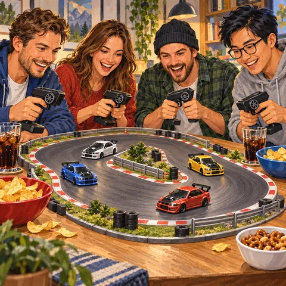

01
Réunir les amis
C’est un concept qui réunit les amis : des moments de convivialité et des fous rires en perspective. Oubliez les soirées de jeu vidéo en ligne, seul derrière son écran : ici, tout le monde est autour de la même table !